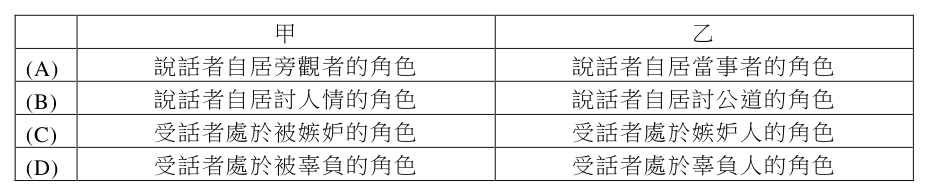
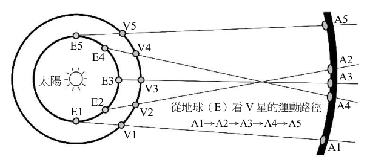
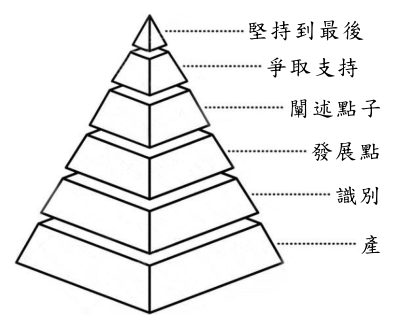

開卷有益 ／
學科能力測驗 ／ 國綜 ／ 112 年112 年學科能力測驗國綜試題與答案
這一頁是民國 112 年學科能力測驗國綜的整份歷屆試題，共 35 題，題目與標準答案出自大考中心 學測歷年試題（依著作權法 §9，考試試題不受著作權保護），其中 35 題附有詳解。以下逐題列出題幹、選項與答案；要計時作答或記錄成績，請用線上練習。
線上作答這一科 →
全部 35 題
第 1 題
下列「」內的字，讀音前後相同的是：
（A） 胡「笳」之拍／僧侶「袈」裟（B） 釁起「鬩」牆／傲「睨」萬物（C） 驀然而「踣」／「掊」擊對手（D） 「吁」嗟而去／「迂」談闊論答案：（A）
詳解與考點 正解：題幹要求「讀音前後相同」，須逐組比對字音。A：「笳」讀 ㄐㄧㄚ，「袈」也讀 ㄐㄧㄚ，前後相同，故 A 為正解。
B：「鬩」讀 ㄒㄧˋ，「睨」讀 ㄋㄧˋ，聲母不同；B 錯誤。
C：「踣」讀 ㄅㄛˊ，「掊」讀 ㄆㄡˇ，聲母與韻母皆不同；C 錯誤。
D：「吁」讀 ㄒㄩ，「迂」讀 ㄩ，聲母不同；D 錯誤。它看起來對，是因為兩字韻母都接近 ㄩ，卻忽略「吁」有 ㄒ 聲母。
本題考點：形近字讀音辨析——比對讀音時同時核對聲母、韻母與聲調；只有三項皆相同，才可判定讀音相同。
第 2 題
下列文句，完全沒有錯別字的是：
（A） 收藏家的稀世珍品樣樣價格不斐（B） 這起工安意外明顯是人謀不彰所導致（C） 叔叔感慨從小命蹇時乖，一路工讀自學（D） 天燈乘載大家的願望，在歡呼聲中冉冉升空答案：（C）
詳解與考點 正解：題幹要求「完全沒有錯別字」，須逐一核對詞語的固定字形與本義。C：「命蹇時乖」指命運困頓、時運不濟，字形正確，故 C 為正解。
A：「價格不斐」應作「價格不菲」；「菲」有微薄義，常用於「所費不菲」，A 錯誤。
B：「人謀不彰」應作「人謀不臧」；「不臧」指不善，B 錯誤。
D：「乘載」應作「承載」；「乘」是搭乘之義，不能表示承擔、裝載心願，D 錯誤。它看起來對，是因為「乘」與「承」同音，且「天燈」容易使人聯想到乘坐。
本題考點：錯別字辨析——固定成語先依慣用字形核對，如不菲、不臧、命蹇時乖；形近或同音字再以本義驗證，「承載」表承擔裝載，「乘」表搭乘，語意不合即是別字。
第 3 題
下列文句畫底線處的詞語，運用最適當的是：
（A） 這宗懸案經專案小組擘肌分理，已掌握部分有利線索（B） 經理很欣賞這名愛將，但也常愛屋及烏地袒護其過失（C） 新品銷量短期內便來者可追，超越廣受好評的老品牌（D） 闖過準決賽就能占到得隴望蜀的位置，可望角逐冠軍答案：（A）
詳解與考點 正解：題幹要求判斷畫線詞語是否能精確配合語境，需先掌握成語本義，再核對句中動作。A：「擘肌分理」指細緻地剖析、條分縷析，用來形容專案小組解析懸案並掌握線索，語義貼切，故 A 為正解。
B：「愛屋及烏」指因愛一個人或物而連帶愛及相關人或物，不是袒護其過失，B 錯誤。
C：「來者可追」指未來仍有機會趕上或努力，不能表示新品已在短期內超越老品牌，C 錯誤。它看起來對，是因為「追」容易被誤解為追過、超越，但此語重點在未來尚可追求。
D：「得隴望蜀」比喻貪得無厭、得一想二，不是取得有利位置，D 錯誤。
本題考點：成語運用——先還原成語本義，再比對句中主體的行為與褒貶色彩；「擘肌分理」用於細密分析，「愛屋及烏」表連帶喜愛，「來者可追」表未來可努力，「得隴望蜀」表貪求不已。
第 4 題
關於表一、表二，最適當的解讀是：【表一】五位詩人所寫「問候懷想親友詩」統計孟浩然 王昌齡 王 維 李 白 杜 甫【表二】五位詩人（橫軸）述及其他四人的詩數孟浩然 王昌齡 王 維 李 白 杜 甫人數詩數占現存詩總量的比率 178 255 92.73 % (現存 275 首詩) 104 114 62.64 % (現存 182 首詩) 159 247 65.34 % (現存 378 首詩) 333 460 43.27 % (現存 1063 首詩) 110 743 50.48 % (現存 1472 首詩) 孟浩然 －王昌齡王 維李 白杜 甫 2 0 0 0 1 0 4 － 1 － 3 1 0 ` 5 2 0 2 0 3 0 － 13 3 －
表一、表二 孟浩然 王昌齡 王 維 李 白 杜 甫 【表一】人數 178 104 159 333 110 【表一】詩數 255 114 247 460 743 【表一】占現存詩總量的比率 92.73% (現存275首詩) 62.64% (現存182首詩) 65.34% (現存378首詩) 43.27% (現存1063首詩) 50.48% (現存1472首詩) 【表二】孟浩然 － 0 3 5 2 【表二】王昌齡 4 － 1 2 0 【表二】王 維 2 1 － 0 3 【表二】李 白 0 1 0 － 13 【表二】杜 甫 0 0 0 3 －
（A） 孟浩然、王昌齡、杜甫皆認識王維，故於表一數字「159」中各計一次（B） 孟浩然較另四位詩人尤好寫詩交友，王昌齡給每名親友的詩至多兩首（C） 杜甫的親友比孟浩然少，他與孟浩然的熟識度，比與王維來得高（D） 李白有不少詩是因問候、懷想親友而寫，但對象不含王維答案：（D）
詳解與考點 正解：題眼是表二中李白述及王維的詩數為 0，而表一顯示李白確有不少問候、懷想親友之作。這表示李白此類作品的對象不含王維，故 D 正確。
A：表一的「159」是王維所寫問候、懷想親友詩的人數統計，不是孟浩然、王昌齡、杜甫各自計入一次的交遊紀錄，A 錯誤。
B：孟浩然的相關詩作占比高，只能看出此類詩作所占比率；表二也不足以確認王昌齡給每一名親友的詩至多兩首，B 錯誤。
C：杜甫的親友人數雖少於孟浩然，但表中沒有熟識程度的指標，不能比較杜甫與孟浩然、王維何者較熟，C 錯誤。它看起來對，是把可計數的詩作或人數直接推成不可量化的熟識程度。
本題考點：圖表交叉判讀——先由表一確認總體情況，再用表二的特定交叉格判斷對象是否出現；推論界線——統計數字可比較數量，沒有關係品質指標時不得推論熟識程度。
第 5 題
溝通交涉時，說話者會自居某個角色，或讓受話者處於某個角色，以利達成目的。下列關於甲、乙的解說，最適當的是：甲、燭之武謂秦穆公：「且君嘗為晉君賜矣，許君焦、瑕，朝濟而夕設版焉，君之所知也。夫晉，何厭之有？既東封鄭，又欲肆其西封。若不闕秦，將焉取之？」乙、樊噲謂項羽：「今沛公先破秦，入咸陽，毫毛不敢有所近，封閉宮室，還軍霸上，以待大王來。故遣將守關者，備他盜出入與非常也。勞苦而功高如此，未有封侯之賞，而聽細說，欲誅有功之人，此亡秦之續耳。」

（A） 甲：說話者自居旁觀者的角色／乙：說話者自居當事者的角色（B） 甲：說話者自居討人情的角色／乙：說話者自居討公道的角色（C） 甲：受話者處於被嫉妒的角色／乙：受話者處於嫉妒人的角色（D） 甲：受話者處於被辜負的角色／乙：受話者處於辜負人的角色答案：（D）
詳解與考點 正解：甲中燭之武以「朝濟而夕設版」指出晉國受秦國之助後旋即設防，將秦穆公置於「被辜負者」的角色；乙中樊噲以沛公勞苦功高卻「欲誅有功之人」責問項羽，將項羽置於「辜負人」的角色，故 D 為正解。
A：甲的說話者雖陳述晉國負秦，重點是替秦穆公申明受負之處，不能只概括為自居旁觀者；乙的樊噲是在替沛公討公道，並非僅以當事者身分敘事，A 錯誤。
B：甲並非向秦穆公討人情，而是以晉國忘恩提醒秦國的利害；乙可說在討公道，但甲的角色判定不合，B 錯誤。
C：甲讓秦穆公成為受晉國辜負者，並非被嫉妒者；乙則指項羽將辜負有功者，也不是嫉妒人，C 錯誤。
本題考點：文言說話策略——辨析角色時，先找說話者如何敘述受話者與第三人的關係；角色判準——被施恩後背棄者構成「辜負人」，受恩後遭背棄的一方構成「被辜負者」。
第 6 題
依據下文，□□內最適合填入的詞語依序是：紇妻纖白，甚美。其部人曰：「將軍何為挈麗人經此？地有神，善竊少女，而美者 □□□□，宜謹護之。」紇甚□□，夜勒兵環其廬，匿婦密室中，謹閉甚固，而以女奴十餘□□之。爾夕，陰風晦黑，至五更，寂然無聞。守者怠而假寐，忽若有物驚寤者，即已失妻矣。（〈補江總白猿傳〉）
（A） 其來有自／疑懼／迎候（B） 其來有自／倨傲／伺守（C） 尤所難免／倨傲／迎候（D） 尤所難免／疑懼／伺守答案：（D）
詳解與考點 正解：三個空格要依前後語意判斷。D：第一空「尤所難免」指美女尤其難免遭惡神覬覦，接「宜謹護之」合理；第二空「疑懼」指紇聽聞後擔憂驚恐，才能引出夜間部署守衛；第三空「伺守」指命女奴在旁守護，與下文「守者怠而假寐」相應，故 D 為正解。
A：「其來有自」指事情有來由，不能表示美女特別易遭竊；「迎候」是迎接，不合防守情境。
B：「其來有自」與第一空語意不合；「倨傲」是傲慢，與立即嚴密防護的反應矛盾。
C：「尤所難免」可合第一空，但「倨傲」與「迎候」都不合懼怕防竊、命人守護的情境。
本題考點：文言詞語填空——先以後文行動驗證人物心理，再以搭配判斷詞義；「疑懼」可引出戒備，「伺守」指守候防護，填入後須使全段因果連貫。
第 7 題
關於下文「做菜」與「作文」之間的譬喻，說明最適當的是：滿洲菜多燒煮，漢人菜多羹湯，童而習之，故擅長也。漢請滿人，滿請漢人，各用所長之菜，轉覺入口新鮮，不失邯鄲故步。今人忘其本分，而要格外討好。漢請滿人用滿菜，滿請漢人用漢菜，反致依樣葫蘆，有名無實，畫虎不成反類犬矣。秀才下場，專作自己文字，務極其工，自有遇合。若逢一宗師而摹仿之，逢一主考而摹仿之，則掇皮無真，終身不中矣。（袁枚《隨園食單》）
（A） 學做料理須知各地菜餚特色，習文當須辨宗門流派（B） 做菜須向前輩方家學習以精進，為文當須追摹宗師（C） 漢人未自幼學習而做不好滿菜，學寫文章亦宜趁早（D） 料理講究發揮個別的特長，作文亦以呈顯本色為尚答案：（D）
詳解與考點 正解：文中以「漢、滿各用所長之菜」譬喻「秀才專作自己文字」，題眼是「各用所長」與「專作自己文字」；兩者皆強調發揮本色而非摹仿討好。D：料理講究發揮個別特長，作文以呈顯本色為尚，完整對應文意，故 D 為正解。
A：文中沒有以菜餚特色譬喻宗門流派的辨識，重點在各人依本分發揮所長，A 錯誤。
B：文中明言「逢一宗師而摹仿之，逢一主考而摹仿之」會掇皮無真、終身不中，與追摹宗師相反，B 錯誤。它看起來對，是因為學習常需參考前輩，但本文批評的是為討好而失去自身本色的摹仿。
C：童而習之用來說明各自擅長的來源，不是主張作文宜趁早學習；全文的核心仍是專作自己文字，C 錯誤。
本題考點：譬喻說理——分別找出本體與喻體，再比對兩者共享的判準；文章主旨——反覆出現的「各用所長」「專作自己文字」指向發揮特長與呈顯本色。
經保育人士多年努力，黃石公園終於在1995年放生14隻灰狼。灰狼進入生態系統後，開始獵捕加拿大馬鹿。鹿群為了生存，便減少出現在河谷。當河谷的植物不再成為鹿群的盤中飧，就逐漸恢復原先的茂盛，有些樹甚至以五倍速度成長。環境學家蒙比爾特在YouTube介紹上述這一連串的改變，並指出因鹿減少而增生的植被，使河岸不易被沖刷成曲折的模樣。
2010年有研究發現：雖然鹿在幾年內減少60%，但樹木從未迅速長高，且鹿仍到狼群出沒頻繁的區域覓食，因為牠們在遼闊的黃石公園裡相遇機率極低。動物學家米德爾頓引述這項研究，認為狼群絕跡確實衝擊黃石公園生態，但過去因此而產生的巨變，不可能藉狼群重返而在短時間內復原。生態學家麥可奈第也指出，鹿的減少確實讓樹木變多，但1990年代蒙大拿州已開放獵捕加拿大馬鹿，而黃石公園的美洲獅與灰熊也對鹿群 。」此外，米德
減少有所貢獻。所以，他認為「『狼改變了河流』，
爾頓承認這個案例讓大家意識到肉食動物對生態系統的重要，但他強調，提供正確訊息仍是環境學家的職責。（改寫自〈「改變美國自然生態的狼英雄」是事實還是神話？〉）
第 8 題
上文內，最適合填入的文句是：
（A） 其中雖有些許真相，但似乎過於誇大（B） 是不折不扣的假新聞，完全缺乏實證（C） 將來可能推翻，但在目前可信度最高（D） 不可等閒視之，而是應該追蹤的警訊答案：（A）
詳解與考點 正解：空格承接「狼改變了河流」的說法；後文一面承認狼使鹿減少、樹木變多，一面指出復原未如宣稱迅速，且尚有獵捕、美洲獅與灰熊等因素。A「其中雖有些許真相，但似乎過於誇大」最能統攝，故選 A。
B：「完全缺乏實證」過於絕對，文中明言狼群確實衝擊生態。
C：文中正引研究質疑該說法，不能說目前可信度最高。
D：警訊與追蹤不是此處對因果敘事真實程度的評論，銜接不合。
本題考點：語段銜接——先辨認前後文是部分肯定還是全盤否定，再選語氣強度相符的句子；有多重因素與反證時，宜選「部分為真但有誇大」而非絕對判斷。
第 9 題
「三位學者的言談」是上文重要素材。關於此素材的運用手法，最適當的敘述是：
（A） 引述三人對「狼英雄」的看法時，僅敘述其論點而省略論據（B） 先綜述各方對「狼英雄」反應，再以三人為代表分述其觀點（C） 以訪談形式呈現三人對「狼英雄」的看法，使讀者有參與感（D） 以三人觀點的出現順序，隱然表達對製造「狼英雄」的質疑答案：（D）
詳解與考點 正解：題幹問三位學者言談的運用手法，須追蹤材料出現的先後與立場變化。D：蒙比爾特先呈現狼重返後帶來巨變的說法，2010 年研究與米德爾頓再提出反證和限制，順序形成由肯定轉向質疑，隱然質疑「狼英雄」敘事，故 D 為正解。
A：文中不只敘述論點；米德爾頓引述鹿減少 60%、樹木未迅速長高等研究作為論據。
B：文章不是先綜述各方反應再分述三人，而是隨論述推進安排不同觀點。
C：材料以轉述與引述呈現，沒有問答互動的訪談形式。
本題考點：說明文素材運用——依人物或研究出現的順序比對立場與證據；若後段材料修正前段的單一因果敘事，可判為作者藉配置表達保留或質疑。
2020年壓軸的天文現象是木星合土星。從地球看，兩顆星在12月21日的視覺距離僅約6.5角分，幾乎黏在一起。由於木星繞太陽一周將近 12年，土星則要29.5年，因此平均約20年才會兩星相合。
古人稱一個運動中的天體逼近另一天體曰「犯」，所以史書記載這兩星相合為「歲星（木星）犯填星（土星）」。但哪顆星犯哪顆星，是如何判斷呢？
E5
E4
V4
V5
A5
以公轉速度而言，木星比土星跑
得快。但因地球軌道短於外側行星的
軌道，所以從地球上看V星的運動（如
右圖），會發生順行（如A1→A2）、
逆行（如A2→A3）的變化。而當木星
在順逆行轉換、看似靜止不動時（古
人稱為「留」），視覺上便可能土星
快於木星。例如西元828年11月5日到
21日，明顯是木星順行衝向土星，但 21到25日，卻是土星以反方向接近木星，跑了2.2角分，但順行的木星只跑了1角分。以現代天文學看，木星每天頂多移動 0.2度，小於宋元之際觀測誤差，約等於清代觀測誤差。如果真要依據這五天的變化寫誰犯誰，古人恐怕辦不到。
從地球（E）看 V 星的運動路徑
A1→A2→A3→A4→A5
A2
A3
太陽
V1
A4
A1
V3
V2
E2
E3
E1
古代「填星犯某星」的記載很少，《明實錄》的「填星犯太白（金星）」，到正史中改為「太白犯填星」。又彙整唐代之前國運占星術的《開元占經》，雖有「歲星犯太白」的占辭，但史書向來寫「太白犯歲星」。故可確定快慢印象是判斷誰犯誰的依據。（改寫自歐陽亮〈都是星星惹的禍？木星合土星─歲星犯填星〉）
第 10 題
談論專業知識的文章，通常預設讀者具備相關背景知識，而不加以說明。下列四個已確知的天文學知識，未被上文預設為背景知識的是：

（A） 金星的公轉速度比土星快（B） 角分與度是測量角度的單位，1度＝60角分（C） 清代的觀測誤差，小於宋元之際的觀測誤差（D） 木星、土星與太陽的距離，較地球與太陽的距離遠答案：（C）
詳解與考點 正解：題目要找「未被預設為背景知識」者，題眼是文章有沒有提供足以得出該知識的資訊。C：文章分別指出木星每日移動 0.2 度「小於宋元之際觀測誤差」且「約等於清代觀測誤差」，由此可推知清代觀測誤差小於宋元之際；這不是讀者必須預先具備的背景知識，故 C 為正解。
A：文章舉「太白犯填星」與「歲星犯太白」說明快慢印象，但未解釋金星公轉速度比土星快，A 是被預設的背景知識。
B：文章直接使用 6.5 角分、2.2 角分、0.2 度等數值，未說明角分與度的換算，B 是被預設的背景知識。
D：文章以地球軌道短於外側行星軌道解釋視運動，未另說明木星、土星比地球離太陽遠，D 是被預設的背景知識。
本題考點：說明文的背景預設——作者未解釋、卻用來支撐說明的知識，是預設背景；判讀時須區分文章直接陳述、可由文內資訊推得，以及必須由讀者先備知識補足的內容。
第 11 題
上文舉出西元828年的事例，主要是用來
（A） 古代的天文記載常有國運占星色彩，故未必合乎事實（B） 古代觀測技術不如現代精密，但保存的史料有利考證（C） 古人無法完全依據木星、土星的移動速度判斷誰犯誰（D） 古人只知木星、土星同向移動，不知二者會逆向靠近答案：（C）
詳解與考點 正解：題幹問 828 年事例的論證作用，關鍵數據是五天內木星與土星視動差僅 1 對 2.2 角分，木星日行不及 0.2 度，已小於宋元、約等於清代的觀測誤差。因此古人無法完全依兩星移動速度可靠判斷誰犯誰，C 正確。
A：事例討論的是觀測誤差與視動速度，未在質疑天文記載的占星色彩或真實性，A 錯誤。
B：作者不是要稱許史料保存有利考證，而是用誤差說明判定的限制，B 錯誤。
D：文中並非說古人不知兩星會逆向靠近，而是說在該段期間速度差太小，難以判定誰犯誰，D 錯誤。
本題考點：舉例論證——以數據找出事例要支持的主張；觀測誤差——當差異小於或接近儀器誤差時，不能作出可靠辨別。
第 12 題
上文若要介紹「古人如何從木星合土星占驗未來」，並援引下列史事，印證《開元占經》收錄的某項預言，則此預言最可能是：（東晉）咸安二年正月己酉，歲星犯填星。……七月，帝疾甚，詔桓溫曰：「少子可輔者，輔之；如不可，君自取之。」賴侍中王坦之毀手詔，改使如王導輔政故事。溫聞之大怒，將誅坦之等。
（A） 填星與歲星合，相犯為內亂（B） 填星所在，歲星從之，伐者利（C） 填星與歲星合，有軍在外，戰不勝，失地（D） 歲星與填星鬥，此謂離德，不出三月，必有亡國答案：（A）
詳解與考點 正解：題幹史事記載「歲星犯填星」後，皇帝病重並出現桓溫可能奪權、王坦之毀改手詔的政治衝突；題眼是將占辭與事件結果對應。A：「填星與歲星合，相犯為內亂」正可對應朝廷權力鬥爭與內部秩序不安，故 A 為正解。
B：「伐者利」指征伐者有利，史事沒有記載對外征戰及勝利，B 錯誤。
C：此占辭須有軍隊在外、作戰失敗與失地；史事只寫宮廷權力衝突，未見失地，C 錯誤。
D：此占辭預言不出3月必亡國，但事例中東晉未亡，且重點是大臣奪權衝突，D 錯誤。
本題考點：文義與史事對應——先從史事抽取病重、輔政爭議與奪權衝突等結果，再比對占辭；關鍵詞判準——有朝廷權力鬥爭選內亂，選項多出征戰、失地或亡國等未見事實即排除。
枯山枯水庭園以砂石為主，但是幾乎每一方石庭都缺少不了綠色的點綴。談及日本庭園之綠意，除了草木之外，青苔也是構成的一大要素， 甲 ，尤其是京都的庭園，如果沒有青苔，勢將減色不少。苔本是繁殖於地面的一種蘚類植物，只要氣候低濕，可以不種自衍。但是日本的庭園崇尚蒼老之美， 乙 ，因此它也就變成了代表庭園歷史的一種標誌了。由於苔本身具有一種厚重的質感，其色雖濃翠，卻不綺豔， 丙 ，加以苔本身所給予人時間之聯想， 丁 ，所以在文學上，任何一個名詞，只要冠以「苔」字，立刻能造成蒼涼悲寂的效果，如「苔階」、「苔徑」、「苔井」、「苔池」。而當你面對京都的苔庭時，這蒼涼悲寂的情調就更具體的呈現在眼前了。（改寫自林文月〈京都的庭園〉）
第 13 題
依據文意，「而青苔非歷時長久不能蔓衍」應填入：
（A） 庭園設計者藉衍生的文學意象營造悲戚感（B） 容易生長因而成為打造庭園最主要的元素（C） 經過氣候與時間醞釀，形成庭園蒼寂的況味（D） 濃翠亮麗點綴暗沉砂石，凸顯庭園色澤對比答案：（B）
詳解與考點 正解：句子「而青苔非歷時長久不能蔓衍」說青苔須經長久時間才能繁殖，正好承接「日本的庭園崇尚蒼老之美」，並說明青苔何以成為庭園歷史的標誌，應填在乙處；乙為 B，故 B 正確。
A：甲處前後在說青苔是日本庭園綠意的重要元素，尚未進入時間與蒼老之美，放入此句銜接不足。
C：丙處後接「加以苔本身所給予人時間之聯想」，此句若置此處會與後文的時間意涵重複。
D：丁處已由苔的色澤、質感與時間聯想推到文學效果，放入生長時間的說明會中斷論述。
本題考點：語句銜接——先找句中的核心概念「歷時長久」，再接到前後的「蒼老之美」與「歷史標誌」；填入後須使指代、因果與論述順序連續。
我果戰士有勇，大將有謀，成算在胸，地利足恃，猶不如誘之登岸而設伏殲之。不然，汪洋海上以數百人操一舟，東馳西突，以角逐於勝負不可知之地，我即無恙，而彼之所挾者小，我之所勞者大，設防設守，形勢不亦懣乎！然誘之上岸，非有成算，則斷不可。蓋敵一登陸，民心易動，軍心易震，非宿將強兵不能得手也。生，臺人也，為臺灣計，臺北可誘之近岸，臺南則不可。蓋臺北港道深通而有屏蔽，彼之駐輪甚便；若登岸，則反失所恃。臺南則港門雖深，風浪甚苦，四圍無山，港中非可駐輪；彼不登岸，不能久居也。若臺中諸港，沙線淺灘，難駛鐵船。然澎湖不守，則敵人得之，安穩收泊。有時展輪四掠，有時載小艇窺闖，臺中難防，臺南、北亦可慮。（洪繻〈籌海議〉）
第 15 題
關於上文對清末臺灣攻守情勢的分析，敘述最適當的是：
（A） 基 於 後 勤 準 備 已 充 足 而 可 誘 敵 深 入（B） 由 海 戰 與 陸 戰 兩 方 面 揭 示 敵 我 利 弊（C） 因 船 艦 操 作 耗 人 力 而 主 張 放 棄 海 戰（D） 從 軍 民 齊 心 的 優 勢 判 斷 可 無 懼 陸 戰答案：（B）
詳解與考點 正解：題眼在作者先說海上以數百人操一舟使「我之所勞者大」，再按臺北、臺南、臺中與澎湖的港灣、地形分析誘敵登岸的條件，論述同時涵蓋海戰與陸戰。B：文章由海上作戰的敵我負擔，進而分析各地登陸與防守情勢，確實揭示海、陸兩方面的敵我利弊，故 B 為正解。
A：文中主張誘敵登岸須有成算，且「非宿將強兵不能得手」，不是因後勤已充足即可誘敵深入，A 錯誤。
C：作者認為海戰使我方耗費較大，卻沒有主張放棄海戰；仍討論敵船活動及各地海防，C 錯誤。它看起來對，是因為「我之所勞者大」語氣強烈，但此句是在比較海戰代價，不是放棄海戰的結論。
D：文中反而說敵人登陸會使民心易動、軍心易震，並未以軍民齊心判斷可無懼陸戰，D 錯誤。
本題考點：文言論述結構——先抓作者的主張與論證層次，再回扣各段證據；判準式閱讀——同時出現海上兵力成本與各港登陸、防守條件，即是在比較海戰與陸戰的敵我利弊。
第 16 題
關於①、②是否符合上文看法，最適當的研判是： ①應加強澎湖海防，避免敵軍入侵臺北、臺中、臺南三地。 ②依臺北、臺南地形評估，引誘敵軍自臺北登岸，是可行的戰略。
（A） 將士經驗（B） 地理環境（C） 攻守路線（D） 外援力量答案：（A）
詳解與考點 正解：題眼是作者說「非宿將強兵不能得手」，可知研判①、②能否成立時，除了港口地形，還要以能否有經驗將領與強兵執行伏擊為關鍵。A：將士經驗最符合文中「宿將強兵」的判準，故 A 為正解。
B：地理環境確實是文中分析臺北、臺南港道的重要條件，但不足以單獨判定誘敵登岸能否成功。它看起來對，是因為題文詳述港道、風浪與淺灘；然而作者明言沒有宿將強兵不可得手。
C：攻守路線是戰略安排，並非文中判斷成敗最關鍵的依據。
D：文中未討論外援力量，不能作為研判依據。
本題考點：文言文論證判讀——先找作者明示的必要條件；「非……不能……」是強判準句，表示缺少宿將強兵便不能成功；題幹①②的地理推論須連同此人力條件檢驗。
李丈參政罷政歸鄉里時，某年二十矣。時時來訪先君，劇談終日。每言秦氏，必曰「咸陽」，憤切慨慷，形於色辭。一日平旦來共飯，謂先君曰：「聞趙相過嶺，悲憂出涕。僕不然，謫命下，青鞋布襪行矣，豈能作兒女態耶！」方言此時，目如炬，聲如鐘，其英偉剛毅之氣，使人興起。後四十年，偶讀公家書，雖徙海表，氣不少衰，叮嚀訓誡之語，皆足垂範百世，猶想見其道青鞋布襪時也。淳熙戊申五月己未，笠澤陸某題。（陸游〈跋李莊簡公家書〉）
第 18 題
關於文中李參政的敘述，最適當的是：
（A） 少年得志，但因個性耿介，二十歲便罷政而歸鄉里（B） 常至陸游家，議論秦朝暴政虐民、聚斂咸陽的史事（C） 雖貶謫海表而坦然赴任，未嘗悲憂，英氣絲毫不減（D） 訓誨陸游之言響若鐘鳴，示現剛毅氣節，令人激昂答案：（C）
詳解與考點 正解：李參政面對貶謫說「青鞋布襪行矣，豈能作兒女態耶」，顯示坦然赴任、不作悲態；後文又說「雖徙海表，氣不少衰」，明言其英氣未減，故 C 為正解。
A：「某年二十矣」是陸游回憶李參政來訪時自己的年紀，並非李參政二十歲罷政；文中也未說他少年得志，A 錯誤。
B：「秦氏」指秦檜，李參政每言及秦檜便憤慨，不是在議論秦朝暴政或咸陽史事，B 錯誤。
D：「聲如鐘」形容李參政談及貶謫時的聲音，「叮嚀訓誡之語」則見於後來家書；選項把兩者混為訓誨陸游之言，D 錯誤。它看起來對，是因為文中確有訓誡與剛毅形象，但兩項敘述出自不同情境，不能直接連結。
本題考點：文言文閱讀理解——依代詞、時間與事件脈絡還原人物言行；指涉判準——先確認「某年二十矣」等語句的主語，再判斷選項是否混淆人物、對象或情境。
第 19 題
關於文中陸游的行為或感懷的敘述，最適當的是：
（A） 相隔四十年後，因重讀李莊簡公來信而為文回覆（B） 採用書序體書寫方式，闡述自己撰作本文的動機（C） 憶及青鞋布襪之言而連結今昔，流露對李公的欽仰（D） 追述昔日共聚議事的情景，感嘆故人遠謫而難再見答案：（C）
詳解與考點 正解：題幹問陸游的行為或感懷，關鍵在「後四十年，偶讀公家書」與「猶想見其道青鞋布襪時也」。C：陸游讀到李莊簡公家書後，連結其昔日所言「青鞋布襪」及英偉剛毅之氣，流露欽仰，故 C 為正解。
A：本文是跋文，不是重讀來信後寫的回覆信。
B：文章為跋體，不是書序體，也未著重交代撰作動機。
D：文中追憶的是李公的氣節，沒有感嘆故人遠謫而難再見。
本題考點：古文情感與文體——以文中回憶與當下閱讀的線索連結今昔；跋文可就書信或作品抒發評議，辨析時須區分欽仰追憶與書信回覆、離別感傷。
第 20 題
上文藉細節描述，展現李參政的人格特質。下列文句，亦透過書寫細節以呈現人物性格特質的是：
（A） 將軍向寵，性行淑均，曉暢軍事，試用於昔日，先帝稱之曰「能」（B） 樊噲側其盾以撞，衛士仆地，噲遂入。披帷，西嚮立，瞋目視項王（C） 行次靈石旅舍，既設床，爐中烹肉且熟，張氏以髮長委地，立梳床前（D） 三人移席，漸入月中。眾視三人坐月中飲，鬚眉畢見，如影之在鏡中答案：（B）
詳解與考點 正解：題幹要求找出同樣藉細節呈現人物性格的文句，原文以「目如炬、聲如鐘」顯示李參政剛毅。B：「側其盾以撞」、「瞋目視項王」以動作與神態刻劃樊噲勇猛，手法相同，故 B 為正解。
A：「性行淑均、曉暢軍事、稱之曰能」是概括評語，不是細節描寫。
C：寫旅舍設床、烹肉與梳髮的生活場景，未用以突顯人物性格。
D：寫人坐月中的奇幻景象，焦點不在人物性格。
本題考點：人物描寫手法——動作、神態等可見細節能具體呈現性格；辨識判準——概括評語與環境、奇景描寫不等於性格細節。
《論語》是對我平生影響最大，使我受益最多的一本書。
早年我所受的傳統教育，以熟讀背誦為主。故所讀的書，無論懂與不懂，都深深地
印入腦中。《論語》既是我最早背誦的一本書，也是我最為熟記的一本書。抗戰後期在
北平淪陷區，雖然不得不穿著補丁的衣服，吞食難以下嚥的混合麵，我也能不以為苦。
因為當面臨這些情境時，《論語》中「 」等語句立即湧現，給予我精神力量，使我可以不復介意。且經由在貧苦中如何自處的反思，進而聯想到「四書」中的其他語
句。這種融會貫通的聯想和體悟，應該正是孔子極為重視的一種教學方式。
在詩歌教學中，這種聯想作用尤為可貴。子貢從孔子談做人修養的「貧而樂，富而
好禮」，聯想到《詩經》的「如切如磋，如琢如磨」，而被孔子讚美是「可與言詩」的
人。孔門論詩，特別注重「興」，因此，我日後教授詩詞，也特別注重詩歌中的興發感
動。而這種感發，往往與人生之體驗和修養關係密切。
我平生讀書的最大樂趣，就是從書中去體會一份活潑的、可以提昇人精神的力量。
正是從這一點來說，《論語》是對我影響最大，使我受益最多的一本書。（改寫自葉嘉
瑩《論語百則・前言》）
第 21 題
依據文意，最適合填入上文 處的文句是：
（A） 食夫稻，衣夫錦，於女安乎（B） 士志於道而恥惡衣惡食者，未足與議也（C） 色惡不食，臭惡不食，失飪不食，不時不食（D） 菲飲食，而致孝乎鬼神；惡衣服，而致美乎黻冕答案：（B）
詳解與考點 正解：題幹空格前寫作者身處補丁衣、難以下嚥的食物，需填能支撐其安處貧苦的《論語》語句。B：「士志於道而恥惡衣惡食者，未足與議也」意為志於道者若以粗衣粗食為恥，便不足與其論道，正能給予精神力量，故 B 為正解。
A：此句質問穿錦衣、吃稻米是否心安，重點不在志士面對困苦的修養。
C：此句談飲食的色、味與烹調條件，與貧苦自處無關。
D：此句說節儉飲食衣服以敬事鬼神、禮服，語境不同。
本題考點：語境填空——先抓前後文的處境與功能，再比對句子主旨；《論語》句義判準——談志於道與惡衣惡食者，才直接回應貧苦中的自我安頓。
第 22 題
下列敘述，最符合上文體會或想法的是：
（A） 熟誦經典可將文章的深意烙印腦中，是對當代學子有益的教育方式（B） 《論語》與《詩經》、「四書」中的語句，可透過聯想體悟相印證（C） 孔門教學注重興發，子貢因以修養之道闡明詩句涵義而受孔子讚賞（D） 讀書之樂來自探求作品真實體驗，進而連結經典以形成興感的力量答案：（B）
詳解與考點 正解：作者在貧苦中由《論語》聯想到「四書」其他語句，子貢則由修養之道聯想到《詩經》，題眼在「融會貫通的聯想和體悟」。B：《論語》、《詩經》與「四書」的語句可經由聯想體悟相互印證，完整概括兩段材料，故 B 正確。
A：作者說早年教育以熟讀背誦為主，也承認有些內容當時不懂；文章重點在後續的聯想與體悟，未全面肯定熟誦是對當代學子有益的教育方式，A 錯誤。
C：本文寫子貢由修養之道聯想到《詩經》而受到讚美，重點是跨越不同經典的融會貫通；選項只說他以修養之道闡明詩句涵義，限縮了本文所呈現的聯想與體悟，C 錯誤。它看起來對，是因為子貢的聯想確實涉及修養與詩句，卻未完整概括兩者相互印證的學習方式。
D：文章所說的讀書之樂，在於從書中體會提升精神的活潑力量，並非探求作品的真實體驗後再連結經典，D 錯誤。
本題考點：文章主旨——從反覆出現的聯想、體悟與精神力量歸納作者觀點；選項比對判準——選項若加入材料未述的教育評價、創作體驗或限縮關鍵意涵，即不符合文意。
甲
嶺南人認為檳榔可以解瘴癘之氣，蘇東坡入境隨俗，大嚼大噉，至汗出且面紅如醉，還特地寫詩歌詠檳榔：「能消瘴癘暖如薰」。南宋羅大經《鶴林玉露》中說自己初至嶺南，對檳榔敬謝不敏；過了一段時間，才敢稍微嘗試；住了一年多後，卻「不可一日無此君矣」。南宋周去非《嶺外代答》則寫道：「有嘲廣人曰：『路上行人口似羊。』言以蔞葉雜咀，終日噍飼也，曲盡噉檳榔之狀矣。每逢人，則黑齒朱唇；數人聚會，則朱殷遍地，實可厭惡。」言詞中極盡輕蔑。（改寫自黃楷元〈陪蘇東坡一起吃檳榔〉）
乙
檳榔原產於馬來西亞，名稱源自馬來語pinang。臺灣的檳榔品質佳，從前除了日常嚼食，也用來待客。
李時珍《本草綱目》說：「嶺南人以檳榔代茶禦瘴，其功有四：一曰醒能使之醉，蓋食之久，則醺然頰赤，若飲酒然，蘇東坡所謂『經潮登頰醉檳榔』也。二曰醉能使之醒，蓋酒後嚼之，則寬氣下痰，餘酲頓解，朱晦庵所謂『檳榔收得為祛痰』也。三曰飢能使之飽。四曰飽能使之飢。蓋空腹食之，則充然氣盛如飽；飽後食之，則飲食快然易消。又且賦性疏通而不泄氣，稟味嚴正而更有餘甘。」
檳榔果實含多酚類化合物、檳榔素、檳榔鹼，會影響大腦、交感神經及副交感神經作用，提高警覺度，刺激腎上腺素分泌。世界衛生組織證實：檳榔素、檳榔鹼具潛在致癌性，檳榔所添加的石灰則會破壞口腔黏膜的表皮細胞，導致細胞增生變異。嚼食經驗令我覺得檳榔很容易成癮，戒除甚難，但不知它的成癮機轉。它迷惑人，卻極具危險，像不正常的親密關係，像禁忌的遊戲，嚼多了會有墮落感、罪惡感。可它又那麼清香，那麼容易上癮。（改寫自焦桐〈禁忌的親密關係〉）
第 23 題
綜合甲、乙二文，關於檳榔的功效或危害，說明最適當的是：
（A） 賦性疏通而不泄氣，有益調節呼吸系統，嶺南用以對抗瘴氣（B） 李時珍認同朱晦庵檳榔可祛痰的看法，咀嚼檳榔有助於醒酒（C） 所含多酚類化合物具雙向調節的作用，既可充飢又可助消化（D） 世界衛生組織證實檳榔鹼會刺激腎上腺素分泌，致食用成癮答案：（B）
詳解與考點 正解：題幹要綜合兩文判斷檳榔的功效或危害，題眼在乙文李時珍所列「醉能使之醒」及朱晦庵「祛痰」的引文。B：李時珍說酒後嚼食檳榔能「寬氣下痰，餘酲頓解」，並引朱晦庵「檳榔收得為祛痰」，可見其認同檳榔可祛痰且有助醒酒，故 B 為正解。
A：甲文的「能消瘴癘」只是嶺南人對檳榔的看法；乙文「賦性疏通而不泄氣」是《本草綱目》的結語，兩者都不能推成「有益調節呼吸系統」，A 曲解文意。
C：乙文雖說檳榔有「飢能使之飽、飽能使之飢」的說法，卻未將此歸因於多酚類化合物，也未稱其為「雙向調節」，C 是自行拼接因果。它看起來對，是因為選項把文中的兩種效果與文中列出的成分放在一起，實際上兩者沒有被建立因果關係。
D：世界衛生組織證實的是檳榔素、檳榔鹼具潛在致癌性；刺激腎上腺素分泌與作者所述的成癮經驗分屬不同敘述，文中未說世衛組織證實其會因此成癮，D 錯誤。
本題考點：綜合閱讀細節判讀——先核對選項的主詞、引文與因果關係是否各自有文本依據；資訊拼接判準——成分、效果或機構認證雖分別出現，原文未連結時不得自行推成因果。
第 24 題
關於甲、乙二文的寫作方式，說明最適當的是：
（A） 甲文就歷史發展評論，認為嚼檳榔有礙觀瞻而不鼓勵食用（B） 乙文兼論檳榔功效與危害，呼籲人們抗拒檳榔的危險誘惑（C） 二文皆引述相關的文學創作與醫療知識，呈現檳榔多面性（D） 二文皆提及食用者親身經驗，點出嚼食檳榔後的成癮現象答案：（D）
詳解與考點 正解：題幹問二文的「寫作方式」，應核對各文是否都寫到食用者親身經驗及成癮。D：甲文羅大經由起初敬謝不敏，到住一年多後「不可一日無此君」，呈現親身嚼食後的依賴；乙文作者也以「嚼食經驗令我覺得檳榔很容易成癮」直接說明親身感受，故 D 最適當。
A：甲文列舉蘇東坡、羅大經與周去非的記述，並非就歷史發展作評論，也未以作者立場主張不鼓勵食用。
B：乙文兼述功效、致癌風險與成癮感受，但沒有直接呼籲人們抗拒檳榔。
C：甲文雖引詩文與文獻，卻未引醫療知識；乙文有醫療與科學說明，二文並非都兼具兩者。
本題考點：比較文本寫作方式——逐項對照引述材料、作者立場與敘述角度，只有兩文皆具備的特徵才能作為共同說明；親身經驗辨識——第一人稱感受或由抗拒轉為依賴的過程，都是經驗性敘述的線索。
第 25 題
下列詩句畫線處所敘述的檳榔作用，甲文或乙文中未提及的是：
（A） 登頰紅潮增嫵媚，潤脾津液益精神（B） 一抹腮紅還舊好，解紛惟有送檳榔（C） 有時食鮆苦羶腥，也須細嚼淨口舐（D） 淡可療飢醫苦口，津能分潤滴枯腸答案：（B）
詳解與考點 正解：題幹要求找出畫線處所寫作用在甲、乙文中未被提及者，須只比對各選項的畫線詞。官方答案為 B；惟 C 所寫「淨口舐」是由文中的「餘甘」與「清香」間接推知，並非直接記載潔淨口腔的功效。B：「解紛」指以贈送檳榔調解人際紛爭，甲、乙文只提到嚼食與待客，沒有化解紛爭的內容，故 B 為正解。
A：「益精神」可對應乙文所說檳榔會提高警覺度、刺激腎上腺素分泌，文本已提及這項作用，A 錯誤。
C：「淨口舐」可由乙文所說檳榔「更有餘甘」且「清香」理解為以其氣味與餘味減輕口中羶腥，C 錯誤。
D：「療飢」可直接對應乙文《本草綱目》所述「飢能使之飽」及空腹食用後有飽足感，D 錯誤。
本題考點：畫線詞文本對照——只檢核畫線處所指作用；原文明說或可由相近感受合理推知者算已提及，完全找不到相應作用者才是答案。
第 26 題（多選）
下列各組「」內的詞，意義前後相同的是：
（A） 克己「復」禮為仁／師道之不「復」可知矣（B） 微夫人之力不「及」此／奔而入，「及」牆，虛若無物（C） 蓋藏「既」富，絃誦興焉／「既」親其所親，亦親其所疏（D） 為之躊躇滿志，「善」刀而藏之／（項伯）素「善」留侯張良（E） 余時為桃花所戀，「竟」不忍去湖上／久不見若影，何「竟」日默默在此答案：（A）（B）
詳解與考點 正解：題幹要求比較同字在兩句中的詞義。A：兩個「復」都表「恢復」；「克己復禮」是恢復禮制，「師道之不復」是師道不再恢復，意義相同。B：兩個「及」都表「到達」；「不及此」是未到這種程度，「及牆」是跑到牆邊，意義相同，故選 A、B。
C：前「既」表「已經」，後「既」表「既然」，義不同。
D：前「善」為拭擦，「善刀而藏之」指把刀擦拭好收藏；後「善」表友好，義不同。
E：前「竟」表「竟然」，後「竟日」表整天，義不同。
本題考點：文言實詞與副詞辨析——將字詞放回完整句意，再比較其詞性與義項；「既」可表已經或既然，「善」可表拭擦或友好，「竟日」為整天。
第 27 題（多選）
「稍微哭一下，就不得了啦，戲也不演啦」，句中「稍微」用來修飾動詞「哭」，表示哭的程度。下列文句「」內的詞，用來修飾動詞，表示動作程度的是：
（A） 侍婢羅列，「頗」僭於上（B） 漁人「甚」異之，復前行（C） 滿目蕭然，感「極」而悲者矣（D） 蓋追先帝之「殊」遇，欲報之於陛下也（E） 行「略」定秦地，函谷關有兵守關，不得入答案：（A）（B）（C）
詳解與考點 正解：題幹指定的是「修飾動詞，表示動作程度」的詞，判斷時要看該詞修飾的核心詞是否為動詞，且是否表示程度高低。A：「頗」修飾動詞「僭」，意為「頗為逾越」，表示動作程度，故 A 正確。B：「甚」修飾動詞「異」，意為「非常感到奇異」，表示動作程度，故 B 正確。C：「極」修飾動詞「感」，表示感觸達到極點，「而悲」承接其後，仍符合修飾動詞並表示程度的條件，故 C 正確。
D：「殊遇」是「特殊禮遇」，「殊」修飾名詞「遇」，不是修飾動詞表程度，D 錯誤。
E：「略」修飾動詞「定」，意為「大略平定」，表示動作的範圍或概略情況，不表示程度，E 錯誤。它看起來對，是因為「略」也放在動詞前面；但判斷副詞時還要分辨它表程度、範圍、時間或情狀。
本題考點：副詞辨析——先找被修飾的詞類，再判斷副詞語意；修飾動詞且可譯為「很、非常、達到極點」者表程度，表示概略範圍者不符合。
第 28 題（多選）
關於「祕密」的看法，符合下文敘述的是：當祕密出現在親近的人際關係中，每個人都覺得刺目─我隱匿了最後也可能是最重要的一條線索，阻止你順暢讀取我全部的檔案。那對愛是多大的殺傷力！這個世界於是鼓勵坦白，彷彿只要開誠布公，必能互相理解，擁抱，痛哭流涕地和解。但祕密卻固執地打破了理性架構的神話，讓人類理解語言的限制，發現自己畢竟掙脫不了那些幽暗的本能，及孤獨如何成為每個人真正的生命基調。害怕孤獨的人為了裝作一無所瞞，以爭取想像中的友誼，於是開始訴說祕密。祕密換祕密，那是朋友的定情儀式，但我們不說自己的祕密。訴說別人祕密是一種無本生意，也是一種聲東擊西的詭計。當所有人都忙著訴說其他人的祕密，自己的祕密就擺脫了被刺探的危險。想要掩人耳目，是另一個人祕密開始出土的原因。（改寫自胡晴舫〈祕密〉）
（A） 人類幽暗不安是因為背地裡訴說別人的祕密（B） 交換祕密揭示人們畏懼孤獨而有相互取暖的需求（C） 訴說他人祕密既能滿足好奇窺探，又可掩藏自己的祕密（D） 保有祕密，拒絕他人全面讀取自己，反映孤獨的生命基調（E） 祕密的存在，乃因語言不可盡意的限制，阻隔了人際關係的親密答案：（B）（C）（D）
詳解與考點 正解：文章將祕密連結到孤獨、人際互動與聲東擊西的自我保護，須依作者明示的因果判讀。B：害怕孤獨的人會以祕密換祕密，爭取想像中的友誼，符合互相取暖的需求，正確。C：訴說別人的祕密是「無本生意」與「聲東擊西」，既可滿足窺探，又可掩藏自己的祕密，正確。D：拒絕他人全面讀取自己、保有祕密，反映孤獨是每個人真正的生命基調，正確。
A：文章說人有幽暗本能，祕密使人理解這一點；幽暗不安不是因背地訴說別人祕密所造成，錯誤。
E：文章是說祕密打破理性架構，讓人理解語言的限制，並非語言不可盡意才造成祕密存在、阻隔親密，因果倒置，錯誤。它看起來對，是因為文中同時出現祕密與語言限制，但作者並未主張後者是前者的成因。
本題考點：論點判斷——逐項核對作者的明示因果，不以相鄰概念自行推論；祕密的功能——既呈現人際關係中的孤獨，也可成為以他人祕密掩護自身的策略。
第 29 題（多選）
關於「夫餘國王」的事蹟，符合下文敘述的是：北夷橐離國王侍婢有娠，王欲殺之。婢對曰：「有氣大如雞子，從天而下，我故有娠。」後產子，捐於豬溷中，豬以口氣噓之不死；復徙置馬欄中，欲使馬藉殺之，馬復以口氣噓之不死。王疑以為天子，令其母收取奴畜之。名東明，令牧牛馬。東明善射，王恐奪其國也，欲殺之。東明走，南至掩淲水，以弓擊水，魚鱉浮為橋，東明得渡。魚鱉解散，追兵不得渡。因都王夫餘，故北夷有夫餘國焉。（王充《論衡》）
（A） 為橐離國王和侍婢所生，因其出生時間而被命名為東明（B） 曾被棄於豬圈馬槽，不僅未受傷害且受到豬馬呼氣照護（C） 其母為侍婢而被視為奴僕，後因善騎射被派去放牧牛馬（D） 為救母而謀反，事敗後南向逃至夫餘，於是成立夫餘國（E） 逃避追殺至河邊時，魚鱉浮出讓他踩踏而渡，得以免難答案：（B）（E）
詳解與考點 正解：題幹要求核對〈論衡〉中夫餘國王東明的事蹟，應逐句比對人物身分、遭遇與逃亡經過。B：「捐於豬溷中，豬以口氣噓之不死；復徙置馬欄中……馬復以口氣噓之不死」，可知他曾被棄於豬圈、馬欄，未受傷害且受豬馬呼氣照護，故 B 正確。E：「魚鱉浮為橋，東明得渡」，可知他逃至河邊時，魚鱉浮出讓他踩踏渡河而免難，故 E 正確。
A：東明的生父是自天而下、如雞子的氣，並非橐離國王；文中也未說因出生時間而命名東明，A 錯誤。
C：東明因善射而遭國王猜忌，文中寫的是令他牧牛馬，並非因善騎射而被派去放牧；其母只是被命令收取他，未說被視為奴僕，C 錯誤。
D：東明是因國王恐他奪國而遭追殺，並非為救母謀反；他南逃渡水後都王夫餘，D 錯誤。它看起來對，是因為選項保留了南逃、夫餘等情節，但把遭追殺的原因與建國經過改寫錯誤。
本題考點：文言文細節正誤——逐句核對人物、因果與行動，不以相近情節替代原文；文意比對判準——選項只要改動身分、動機、能力或事件先後之一，即不可判為正確。
第 30 題（多選）
下列兩節現代詩，均以賴和為寫作題材。關於詩意的解讀，適當的是：甲、販夫的賣菜聲／從泛黃的紙張中傳來／殖民的申誡／帝國的律令／不過是根被折斷的秤錘呀／在不等重的兩端／丈量用聽診器／也無法診療的喘鳴／沉吟為一位詩人（洪崇傑〈稱仔的彼端─致賴和〉）乙、你與所有人／都曾摀著嘴、駝著背走過／日本軍警到處罰站的街頭／在你自己的彰化媽祖宮用聽診器／像順風耳般，聽竊所有在病人心房裡／癱瘓的故事與詩歌／住滿秦得參、林先生、添福、阿金、莫那魯道……／你堅決帶他們走出情節與格律／到軍刀與警棍林立的廣場大膽遊行／在文藝欄一遍遍排版複刻中／把他們供奉在文壇（解昆樺〈在囚獄中獲致潔淨的光〉）
（A） 甲詩「被折斷的秤錘」與乙詩「駝著背」，刻劃人民被拷打的形象（B） 二詩均以「聽診器」提示醫師的身分，暗指醫者仁心而能聽取民瘼（C） 甲詩的「喘鳴」與乙詩的「癱瘓」，均指日治時期民智仍屬蒙昧無知（D） 二詩均述及〈一桿稱仔〉，慶幸文字能在當時對抗威權且洗滌人民苦厄（E） 甲詩認為人民苦難讓詩人悲憫發聲，乙詩認為苦難的人民被書寫而銘刻答案：（B）（E）
詳解與考點 正解：題幹要解讀兩詩如何書寫賴和與殖民時代人民。B：甲詩「用聽診器丈量……喘鳴」、乙詩在媽祖宮用聽診器聽病人心房，都提示賴和醫師身分，暗指他以醫者仁心聽取民瘼，正確。E：甲詩以人民苦難引出詩人的沉吟與悲憫，乙詩把秦得參等受壓迫者寫入文壇，兩者解讀均合詩意，故 B、E 為正解。
A：甲的「被折斷的秤錘」象徵殖民律令的不公，乙的「駝著背」呈現受壓迫姿態，不能都直接解為被拷打。
C：「喘鳴」與「癱瘓」指殖民壓迫下的苦痛與困境，不是民智蒙昧。
D：兩詩未都述及〈一桿稱仔〉，也沒有慶幸文字已洗滌人民苦厄的意思。
本題考點：現代詩意象解讀——將意象放回前後詩句判讀其象徵，不把受壓迫的身體語彙誤解為單一字面事件；比較兩詩時，要分別確認醫者身分、人民苦難與書寫行動的對應。
甲
菊花開，正歸來。伴虎溪僧鶴林友龍山客，似杜工部陶淵明李太白，有洞庭柑東陽酒西湖蟹。哎！楚三閭休怪。（〔元〕馬致遠〈撥不斷〉）
乙
丙
長醉後妨何礙？不醒時有甚思？糟醃兩個功名字，醅渰千古興亡事，麴埋萬丈虹霓志。不達時皆笑屈原非，但知音盡說陶潛是。（〔元〕白樸〈寄生草〉）
屈原已經成為一個符號和象徵。
漢代，屈原的爭議主要落於「怨君」。儒家對情感表達的理想是「樂而不淫，哀而醅：沒過濾的酒。
渰：同「淹」，淹沒。
不傷」。肯定屈原的人以注解儒家經書的方式注《楚辭》，試圖建立其經典地位，認為屈原和《詩經》一樣「怨誹而不亂」，可與日月爭光。批評屈原的人認為屈原在〈離騷〉有著歌淚式的表達，甚至悲壯付出生命，與儒家中庸之道產生劇烈拉鋸。宋朝遭外族侵門踏戶，激發民族情感。《楚辭》讀者對屈原情感表現的理解，不同於漢代只從忠君脈絡詮釋，轉而強調其愛國之心，以國家民族興亡的高度，將「當怨與否」的倫理內涵重新審視，由此確立屈原情感的正當性。
明代黃文煥因蒙冤下獄，對屈原不被理解的痛苦感同身受。在獄中著《楚辭聽直》，為屈原的忠義之心辯護，希望有人也能替他昭雪冤屈。
屈原之於現代讀者的意義，與社會文化語境相關，面對抗戰，屈原愛國的面向被重新加強。隨著端午節被確立為詩人節，學者開始思考「詩人何為」，從中探討文學與政治的關係。當個人理想遭遇挫折，就像屈原不被楚王了解，這時該不該執著？可藉由屈原「舉世皆濁我獨清」的心緒，思考理想和世界的衝突。（改寫自徐平〈一個屈原，各自表述—政大廖棟樑揭開屈原的百變面紗〉）
第 31 題（多選）
關於甲、乙二曲的寫作手法，敘述適當的是：
（A） 甲曲以「菊花開，正歸來」，點出當時非如屈原身處的亂世（B） 乙曲以糟醃、醅渰、麴埋，把萬事可隨一醉泯滅加以形象化（C） 甲曲在飲酒食蟹中流露閒居之趣，乙曲在醉醒間隱含矛盾之情（D） 二曲皆藉嘲諷屈原的結局，表現出滑稽幽默的輕鬆與玩世態度（E） 二曲皆以陶潛對比屈原，說明自身生命選擇或價值判斷的傾向答案：（B）（C）（E）
詳解與考點 正解：題幹問二曲的寫作手法，須由意象、語氣與人物對比判讀。B：乙曲以「糟醃」、「醅渰」、「麴埋」三個釀酒意象，把功名、興亡與志向皆可隨酒淹沒的意思形象化。C：甲曲寫菊花、歸來、酒與蟹，流露閒居之趣；乙曲雖說長醉無礙，卻以「麴埋萬丈虹霓志」寫壯志被埋沒，隱含灑脫與不甘的矛盾。E：甲曲末句「楚三閭休怪」以屈原反襯歸隱選擇；乙曲說「知音盡說陶潛是」，也以陶潛對比屈原，皆表現自身的生命選擇或價值傾向。
A：「菊花開，正歸來」主要寫歸隱時令與閒適，不足以判定當時不是亂世。
D：二曲並非嘲諷屈原的結局；對屈原的提及含有價值比較與複雜情感，不能解作滑稽幽默的玩世態度。
本題考點：元曲意象——酒的釀造語彙可將抽象的功名、興亡與志向具體化；語氣反差——表面醉後灑脫，若同時寫志向被埋，常隱含失意與矛盾；人物對比——以陶潛、屈原並置，可辨析歸隱與堅持理想的價值取向。
第 32 題（多選）
依據甲、乙二曲和丙文，關於歷代對屈原的看法，敘述適當的是：
（A） 漢代對屈原的爭辯，在其作品情感的表達方式是否優於《詩經》（B） 宋代時關注屈原愛國之心，從民族情操的角度使怨君問題合理化（C） 元代文人喜借用屈原典故，說明自己雖然歸隱卻待時而動的心境（D） 明代時有與屈原相似際遇的人，將自身認同投射到屈原的遭遇上（E） 現代的各種文化語境中，詮釋屈原既保有過去面向也有時代新意答案：（B）（D）（E）
詳解與考點 正解：丙文指出漢代爭議在「怨君」的正當性，宋代改從國家民族興亡理解屈原愛國，明代黃文煥又將自身冤屈投射到屈原；依各時代詮釋重點比對即可判斷。B：宋代面對外族入侵，強調屈原的愛國之心，從民族情操重新審視「當怨與否」，使怨君問題得到新的合理化，故 B 正確。D：明代黃文煥因蒙冤下獄，對屈原不被理解的痛苦感同身受，並為其忠義辯護，正是將自身認同投射到屈原遭遇，故 D 正確。E：現代面對抗戰、詩人節及個人理想挫折等不同文化語境，既延續屈原的愛國、理想面向，也賦予新的時代意義，故 E 正確。
A：漢代爭議在屈原「怨君」及情感表達是否合乎儒家中庸，雖有人以《詩經》為參照建立其經典地位，並非比較作品情感表達方式何者優劣，A 錯誤。
C：甲、乙二曲借屈原、陶潛典故寫飲酒避世與對功名興亡的超脫，不是「歸隱卻待時而動」，C 錯誤。它看起來對，是因為作品提到屈原，容易聯想到忠貞待時，但曲文實際強調的是醉後無礙與不求仕進。
本題考點：文言與現代文整合——先分辨曲文抒寫的情志，再回扣丙文的歷代詮釋脈絡；歷史文本詮釋——判斷敘述時須比對時代語境與原文焦點，不可將相近典故自行延伸。
甲
古典是穿越世代的共有智慧，也是橫跨國界的共享遺產。
在人文教育上，思想的開放是終極目標。文化應通過批判性地消化繼承，而不能全盤否定或粗暴對抗。美國獨立成功，文化上仍與英國文學緊密銜接。主張脫亞入歐的日本，從來就持續接納儒學的薰陶。
古典之成為古典，並不是因為年齡蒼老，而是因為它經過不同歷史階段的過濾與篩選，禁得起解釋、開發、創造。無論時代如何進步，只有人性是千古不變。即使是千年以前的《詩經》，在恰當時刻也能感發不同時代的心靈。
追求進步並非要摒棄古典，而應以開放的精神重新檢視。所有的古典，經過閱讀、解釋、再創造，就會變成當代價值的一部分。
經過閱讀與再閱讀，創造與再創造，古典就是永遠的現代。（改寫自陳芳明〈古典是永遠的現代〉）
乙
古典不等於古文，年代也未必久遠。披頭四的歌曲迄今不過半世紀，但對後世音樂影響深遠；蘇聯導演艾森斯坦《波坦金戰艦》的蒙太奇手法，如今已是電影的基本文法。這些在當時展現新手法或開創新視野的作品，後人愈是追隨，愈能顯出其永恆的地位。2006年，龜山郁夫新譯杜思妥也夫斯基 1880年的《卡拉馬助夫兄弟們》，一出版即暢銷百萬冊。優秀的譯筆能賦予古典現代生命。
古典的耀眼光彩從不會因古老而褪色。《論語》提供的建言，到今日仍可為人生的困境解惑。古典有時理解不易，可參考專家的引導，但不要變成先入之見。正岡子規認為《古今和歌集》不及《萬葉集》，但他是為了替低迷的短歌灌注活力，才批判有貴族傾向的和歌，讀者不能斷章取義。（改寫自齋藤孝著，莊雅琇譯《古典力》）
第 33 題
請就甲、乙二文關於「古典」的敘述，回答下列問題： (1) 能成為古典的作品，在流傳過程中須具備什麼條件？又在創作當時可能具有什麼特徵？（占4分，作答字數：40字以內。） (2) 請說明乙文哪個例子，最適合印證甲文「人性是千古不變」？（占2分，作答字數：20 字以內。）
標準答案未收錄
詳解與考點 【AI 整理需查證】考點：雙文本比較，「古典」概念分析（擷取訊息、連結文本、綜整解釋）。
(1) 流傳過程須具備的條件：須經過不同歷史階段的過濾與篩選，禁得起解釋、開發、創造。創作當時可能具有的特徵：在當時展現新手法或開創新視野（呼應乙文披頭四、艾森斯坦的例子）。
(2) 乙文最適合印證甲文「人性是千古不變」的例子是《論語》。甲文以「即使是千年以前的《詩經》，在恰當時刻也能感發不同時代的心靈」說明人性千古不變；乙文則言「《論語》提供的建言，到今日仍可為人生的困境解惑」——古典作品歷經千百年仍能回應當代人共通的處境與心靈，正是「人性千古不變」的體現。官方滿分參考答案：「《論語》提供的建言，至今仍可為人生解惑。」（或：「《論語》至今仍可為人生解惑。」）
常見陷阱：誤選《卡拉馬助夫兄弟們》——該例在乙文的重點是「優秀的譯筆能賦予古典現代生命」，強調的是「譯筆／再創造」使古典獲得新生命，而非人性不變；披頭四、艾森斯坦則屬「展現新手法、開創新視野」，皆非本題所求。本題唯一切合「人性千古不變」者為《論語》。
第 34 題
關於古典的閱讀策略，最符合甲、乙二文敘述的是：（占2分，單選題）
（A） 甲文指出廣泛接受並適當批判古典，可讓思想開闊深厚（B） 乙文強調閱讀古典應從庶民角度出發，以了解時代脈動（C） 甲文認為應獨自體會深思，乙文認為不妨倚賴專家引導（D） 二文皆主張藉由同情共感的體證，可消解字面理解障礙答案：（A）
詳解與考點 正解：甲文主張以開放精神批判性地消化、繼承古典，並經閱讀、解釋與再創造，使古典成為當代價值。A 說廣泛接受並適當批判古典可使思想開闊，符合甲文，故選 A。
B：乙文談古典作品的影響、譯筆與專家引導，未主張必從庶民角度閱讀。
C：甲文主張開放與批判性繼承，並非要求獨自體會；乙文也只說可參考專家，不是倚賴。
D：二文均未以「同情共感」作為消解字面理解障礙的方法。
本題考點：跨文本閱讀——選項須同時精確對應文本的主張；甲文的關鍵是批判繼承與再創造，乙文的關鍵是古典可具現代生命並可參考專家。
第 35 題
甲、乙二文均認為古典具有永恆性。明代許潮《赤壁遊》雜劇，對蘇軾〈赤壁賦〉既有承繼又有創新，請依下列引文回答問題：〔生〕今山水星月，相照若昔，而英雄何寥寥也！吾四人生：劇中扮演蘇軾。遊賞於此，幸各能詩。可將曹孟德、孫仲謀、劉玄德、周公瑾，寫作四鬮，各拈取一鬮，吟詩一首，以見弔古斷案。〔眾〕最好！最好！……〔生〕我等吟詠已完，可斟酒來。各照題目，嘆他眾：指蘇軾外的黃庭堅、佛印、漁父。一番。……（黃鶯兒）〔生〕躍馬意何長，視東吳已入囊，舳艫千里旌旗望。橫槊時氣揚，釃酒時態狂，誰知一火把神魂喪！〔合〕嘆興亡，江山如故，何處覓曹郎？…… （祝英台）〔生〕黃鶯兒、祝英台：皆曲牌名。把古今愁，廊廟悶，聊付與滄浪。 (1) 舟中四人抽籤後，賦詩的規則為何？（占2分，作答字數：20字以內，不可抄錄原文。） (2) 劇曲中，唱詞常表述人物的心聲。請問：①眾人〔合〕唱，除表達物是人非的喟嘆，更反映出世人對個體生命有什麼「共同的焦慮」？②許潮藉東坡之口道出：「聊付與滄浪」，對此一焦慮所持的態度是什麼？（ ①占2分，作答字數： 10字以內； ②占2 分，作答字數：10字以內）第二題（占 8 分）
標準答案未收錄
詳解與考點 【AI 整理需查證】考點：跨文本閱讀與文學鑑賞，古典承繼與創新。(1) 舟中四人抽籤規則：各抽一籤（曹操/孫權/劉備/周瑜之一），依抽中題目各自吟詩一首，以弔古評論。(2)①眾人合唱「何處覓曹郎」表達英雄消逝，共同焦慮為「個體生命有限、功業難以永存（無可避免的消亡）」；②蘇軾唱「聊付與滄浪」對此焦慮持超然放達、以自然化解的曠達態度。常見陷阱：①誤答「江山易主的政治感傷」未切入個體生命維度。
能實現新奇構想的原創者，可能比想像中謹慎保守。要實現原創構想，通常意謂挑戰現狀，所以原創者更懂得透過溝通爭取認同。例如好萊塢編劇的劇本能否開拍，往往取決於能否說服高層主管。1990年代早期，一群迪士尼編劇希望片廠不要繼續改編「灰姑娘」、「白雪公主」等故事，而能接受嶄新的《獅子王》。他們最初是以「把鹿換成獅子的非洲版小鹿斑比」介紹給片廠主管，未脫動物對
抗人類的基調。經過修改，才讓老獅王木法沙、小獅王
辛巴、大反派叔父刀疤，接近莎士比亞《哈姆雷特》的
主要角色─叔父殺死了身為國王的父親，兒子為父親
復仇。同時，發覺來自莎劇「To be or not to be」的困惑，反映了人性現實，相信能獲得普遍回響。最終，片廠支
持這個由獅子演出《哈姆雷特》的構想，創下動畫電影
史上的票房紀錄。
在這個案例中，新奇固然是原創性的關鍵，但也是一項挑戰。當編劇提出《獅子王》類似《哈姆雷特》時，這個熟悉感有助於高層主管把新奇的大草原腳本和經典故事連結起來。絕對的原創性有時並不讓人放心，畢竟高層主管需要參考座標，找到向觀眾行銷的著力點。（改寫自亞當‧格蘭特著，黃翫譯《作個原創者》）
第 36 題
依據上文，原創者「可能比想像中謹慎保守」，乃因他們對原創構想的處理方式通常是：（占2分，單選題）
（A） 提高接受程度，降低實現阻力（B） 刪減奇趣異想，符合經典宗旨（C） 延長醞釀時間，不求搶先曝光（D） 瞄準市場需求，審慎投注資源答案：（A）
詳解與考點 正解：題眼是「原創者更懂得透過溝通爭取認同」。迪士尼編劇把陌生的大草原腳本連結《哈姆雷特》，讓高層主管有熟悉的參考座標可循，新奇構想因此變得可被接受、推動阻力隨之下降。這正是「謹慎保守」的真正內涵，故 A 為正解。
B：編劇並未刪減奇趣異想去遷就經典；他們保留獅子演出的新奇設定，只是替它找到一個經典的理解框架，方向與本選項相反。
C：文中的謹慎不在於拖延或壓後曝光。編劇一開始就向主管提案，只是改變了包裝方式，全文沒有醞釀時間長短的線索。
D：需要參考座標的是高層主管，不是編劇在瞄準市場後撙節資源；「審慎投注資源」屬於片廠的投資決策，並非原創者處理構想的方式。
本題考點：論說文因果推論——先抓作者對現象提出的解釋句（原創者懂得溝通爭取認同），再用案例回扣；判準——正確選項須同時說明「做了什麼」與「為何有效」，只描述態度（保守、謹慎）或改寫案例細節者皆非答案。
第 37 題
上文認為，《獅子王》的創造來自《哈姆雷特》的再閱讀。請參考右圖「創意技能金字塔」，就文中觀點回答下列問題：(1) 《獅子王》的編劇將構想連結《哈姆雷特》後，自認能達金字塔「識別好點子」階段的主要理由是什麼？（占2分，作答字數：20字以內。）(2) 當《獅子王》構想進到金字塔的「爭取支持」階段，《哈姆雷特》能對高層主管產生說服作用，是基於哪二個理由？（占4分，作答字數：40字以內。）

本題選項為上圖中的 A／B／C／D，請對照圖片作答。
標準答案未收錄
詳解與考點 本題為混合題型的非選題，官方選擇題答案表未列第 37 題；以下依原文推得參考答案，非大考中心公布之標準答案原文。
考點：金字塔各階段的定義配合文本論證——「識別好點子」問的是編劇為何相信這是好點子，「爭取支持」問的是這個點子為何能說服別人。兩問的答案在原文的不同段落，別混用。
(1) 因為連結《哈姆雷特》後，「To be or not to be」的困惑反映人性現實，編劇相信能獲得普遍回響。（約 20 字可寫：莎劇的困惑反映人性現實，相信能獲普遍回響。）
(2) 兩個理由都在末段：其一，《哈姆雷特》帶來的熟悉感，有助於高層主管把新奇的大草原腳本與經典故事連結起來；其二，絕對的原創性並不讓人放心，主管需要參考座標，才能找到向觀眾行銷的著力點。
常見失分：把 (1) 寫成「票房會很好」——那是結果不是理由，且票房紀錄出現在故事末尾，與「識別好點子」階段無關；(2) 只答一個理由（多半漏掉「行銷著力點」）而丟一半分數。
其他年度
回到學科能力測驗國綜的年度總覽 ，
或到學科能力測驗題庫首頁 看其他科目。
題目與標準答案出自大考中心 學測歷年試題（依著作權法 §9，考試試題不受著作權保護）。依中華民國《著作權法》第 9 條第 1 項第 5 款，
依法令舉行之各類考試試題不得為著作權之標的，得自由利用。詳解為 AI 整理的學習輔助，
並非官方標準答案 ；中華民國會修訂，引用前請對照現行版本查證。